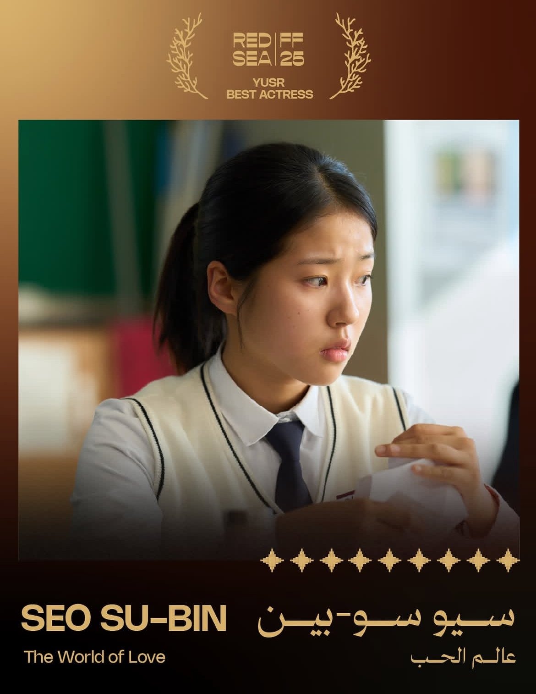
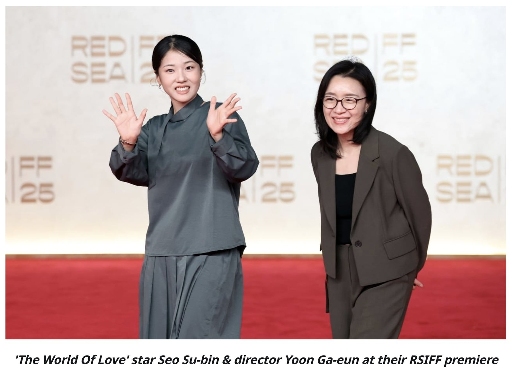

2025년 12월 사우디아라비아 제다에서 열린 제5회 레드씨 국제영화제(Red Sea International Film Festival, 이하 RSIFF) 경쟁 부문에서 한국 배우 서수빈(Seo Su-bin)이 영화 〈세계의 주인〉(영문명: The World of Love)으로 Yusr Best Actress(여우주연상)를 수상했다. Yusr Awards는 'RSIFF' 경쟁 부문에서 수여되는 주요 상으로, 국제 심사 위원단의 심사를 거쳐 선정된다. 'RSIFF' 측은 12월 13일에 진행된 폐막식과 함께 공식 수상자 명단을 발표하며 서수빈의 수상을 확정했다.

▲ 서수빈 수상 축하 이미지 — 출처: 레드씨 국제영화제 공식 X 계정(@RedSeaFilm)
이번 수상은 2021년 영화제 출범 이후 레드씨 국제영화제 경쟁 부문에서 한국 배우가 공식 연기상을 수상한 첫 사례로, 중동·북아프리카(MENA) 지역을 대표하는 국제 영화제에서 한국 배우의 존재감을 뚜렷하게 각인시킨 기록으로 남게 됐다. 서수빈은 극 중 인물을 과장 없이 절제된 연기로 표현해 심사위원단과 관객의 주목을 받았다. 이 작품은 토론토 국제 영화제에서 월드 프리미어로 공개된 이후, 미국 영화 전문 매체 버라이어티(Variety)로부터 '크리틱스 픽(Critics' Pick)'으로 선정된 바 있다. 서수빈은 신인임에도 불구하고 놀라울 정도로 설득력 있게 주연을 연기해 영화 전체를 지탱하는 중심축이라고 평가를 받기도 했다.

▲ 레드카펫에 선 서수빈 배우, 윤가은 감독 — 출처: Streamlined
윤가은 감독은 영화제 기간 중 진행된 현지 관객과의 대화에서 "한국 관객이 감정적으로 반응했던 장면에서 사우디 관객 역시 같은 지점에서 공감하는 모습을 보며, 영화가 문화와 언어의 차이를 넘어 소통할 수 있는 매체라는 점을 다시 한 번 실감했다"고 밝혔다. 감독은 사우디아라비아를 "열린 창작 공간"으로 평가하며, 향후 기회가 된다면 현지 영화인들과의 협업에도 열려 있다는 뜻을 밝혔다. 배우 서수빈 역시 영화제 기간 동안 사우디아라비아에서의 경험을 언급하며 "창작 환경과 에너지가 인상적이었다"라며 사우디 감독들과의 협업에 대한 관심을 드러냈다.
사진출처 및 참고자료
레드씨 국제영화제 공식 소셜미디어 X 계정(@RedSeaFilm)
히아 매거진(Hia Magazine) 공식 인스타그램 계정(@hiamag)
Redsea International Film Festival (2025. 12. 12). Red Sea International Film Festival Presents 2025 Closing Night And Yusr Awards
《스트림라인드(Streamlined)》(2025. 12. 18). Red Sea Fest & Souk Wrap; Saudi Film Funders; MENA Box Office
《버라이어티(Variety)》(2025. 12. 10). 'The World of Love' Review: Yoon Ga-eun's Superb Social Drama Tackles a Sensitive Topic With Grace, Power and Beautifully Judged Humor